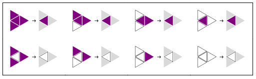
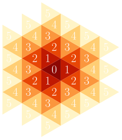

Abstract
This website is about Triangular Automata (TA), which stands for cellular automata in the triangular grid. On this page, you will find an introduction to TA, building up from the basics to more advanced concepts. If math expressions do not display correctly, try Chrome or Firefox. In the gallery, each Elementary Triangular Automata (ETA) can be explored in many ways. Use the control panel at the bottom of the page and follow your curiosity. Space-time animations are still being computed and will be available soon. Some rules are stroboscopic so, if you suffer from epilepsy, avoid animations. Click on code to learn about how these results were computed and download the Mathematica package. Contact me if you want to know more about this project.

 Table Of Contents
Table Of Contents
Introduction
A Cellular Automaton (CA) is a mathematical object composed of two elements:
- a grid whose cells hold states defined at time $t=0$
- a local and deterministic rule iteratively applied to evolve the grid to any discrete time step $t\in\mathbb{N}$
ETA grid cells hold only binary states. Each cell will either be:
- ‟alive” and colored purple
 , with a state $s=1$
, with a state $s=1$ - ‟dead” and colored white , with a state $s=0$
 |
 |
 |
 |
 |
 |
|---|
For each of these configurations, a rule must specify whether the cell will be dead or alive at the next time step. Here is an example of such a rule (click on the plot to see what it does to a single living cell):
Since there are only $2^8=256$ possible ETA rules, they can be seen as the two-dimensional counterpart to Wolfram’s Elementary Cellular Automata [16]. Furthermore, the triangle is the the polygon tiling 2D space with the smallest possible number of neighbors per cell. ETA are thus the most basic 2D cellular automata and have a fundamental aspect in this respect.
In the following sections, we will find a way to index rules, learn more about ETA and their behavior, see how they can be efficiently implemented using graph theory, and much more.
 Rules
Rules
Our goal here is to index all 256 rules by a unique rule number $n$, in the Wolfram Code [17] style. We will use the same numbering system as in [7] and [18]. First, let's give every local configuration a number. The configuration number of a cell will be the number of its alive neighbors, plus 4 if itself is alive.
|
|
|
|
|
|
||
|---|---|---|---|---|---|---|---|
| 0 | 1 | 2 | 3 | 4 | 5 | 6 | 7 |
A rule $R$ tells us what the state of a cell will become at the next time step depending on its local configuration. It is thus a map from configuration space to state space. $$R: \{0,1,2,3,4,5,6,7\}\rightarrow\{0,1\}$$
Like in the Wolfram Code, we can use rule numbers such that, in binary, they display the behavior of the rule. $$n=\sum_{c=0}^7 2^c R(c)$$ Starting from the right, the binary digits of a rule number show the future state associated with all configurations as we ordered them. For example, if a cell's configuration is $c=0$ and the least significant digit of the rule number is 1, then it will become alive at $t+1$. Similarly, if its configuration is $c=7$ and the most significant digit of the rule number is 0, then it will be dead at $t+1$. Can you find the binary number of the following rule?

The number of this rule is $11010010_2=210_{10}$. If you didn't guess, can you see now where it appears in the plot above?
 Behavior
Behavior
Now comes the fun part! Let's take a look at what these automata do. It is particularly interesting to see what happens to a single living cell under different ETA rules. So, unless otherwise noted, the following pictures come from this starting point.
Beauty
One of the most striking aspects of these automata is their beauty. Let's simply enjoy some neat examples first.


Chaos
Chaos is one of the key features of complex systems. In mathematics, "chaos" is a term used to characterize dynamical systems with a strong dependence on initial conditions. This means that a small difference in initial grid will be amplified to the point of producing very different results. For example, here are two randomly generated grids that are completely similar except for the central cell, which is alive in (1) and dead in (2).
 |
 |
|---|---|
| (1) at $t=0$ | (2) at $t=0$ |
After 512 time steps of evolution with rule 53, even though they looked almost indistinguishable at first, they have become completely different. Don't they look a little like Antarctica?
 |
 |
|---|---|
| (1) at $t=512$ | (2) at $t=512$ |
Fractals
Some rules produce similar structures across space, time and, more interestingly, scales. Self-similarity across scales is what defines fractals. We call these structures scale-free. In the following examples, you can see the same pattern repeated at different scales around the origin.


Space Time
Similar to the way Elementary Cellular Automata are most often represented, we can display the behavior of an ETA in one single plot. Since, an instant is two-dimensional here, adding the dimension of time creates a 3D structure. In these space-time plots, time flows downward. The successive grids are stacked beneath each other, starting from the initial conditions at the top. The space-time plots that you will find on this website show only the cells that have the opposite state to the environment. A lot of information is therefore lost. We don't see the internal structure and we can't know the state of the environment. Nevertheless, this representation can help us visualize some properties of ETA that are difficult to notice otherwise. For example, certain rules create 3D space-time fractals.

Self-Reproduction
As mentioned in [15], one of the original motivations for the development of cellular automata was to create a mathematical model of self-reproduction. Interestingly, 4 of the 256 ETA rules naturally reproduce any finite pattern given as initial condition: rules 85, 90, 165 and 170. A proof of self-reproduction [15] based on path counting already exists for rule 170. Similarly spirited proofs could probably be proposed for the others.
 rule 170 from a recognizable starting point
rule 170 from a recognizable starting point
Noise
Some rules seem to generate a pretty good noise. For example, if we pick a simple starting point with no symmetries, rule 37 will usually turn it into an expanding circle with a random-looking interior.
 Simple asymmetric starting point
Simple asymmetric starting point
 Result at $t=1024$ with rule 37
Result at $t=1024$ with rule 37
Boring Rules
There is an identity rule which leaves any grid unchanged: rule 240.
And a negative rule that swaps alive and dead states: rule 15.
Twins
A simple procedure can be followed to find the evil twin of a rule. This twin has the same effect but in the negative world where all states have been swapped. To find it, take the number in its binary form (including the leading zeros needed for the number to be 8 digits long), swap ones and zeros and read backwards. Let's take rule 214 as an example.
First, find the binary form of the rule number. $$ 214=11010110_2 $$ Then swap ones and zeros. $$ 00101001_2 $$ And finally reverse it. $$ 10010100_2=148 $$ Did it work?
 left: rule 214 from one alive cell
left: rule 214 from one alive cell
right: rule 148 from one dead cell
 Graph Theory
Graph Theory
This section introduces some of the tricks used to efficiently compute everything you have seen so far.
Have you wondered why most of the previous results have a hexagonal shape? The answer is quite simple: the region of influence of a single cell expands hexagonlly. In physics terms, light cones are hexagonal pyramids in the triangular grid.

displayed by rule 254 in space-time view
The following plot shows the time at which the different layers are affected by the state of the centeral cell.
 We are going to use a framework based on graph theory and linear algebra, developed in a previous work [18]. In this framework, the triangular grid is considered as a graph. This graph is expanded along the region of influence of the initial structure at each time step to mimic an infinite grid.The interest of seeing the triangular grid as a graph, is that computing its evolution is made quite easy by properties of its adjacency matrix $\mathcal{A}$ and state vector $\mathcal{S}$. Every vertex $v$ of this graph will hold a state $s(v)$. The neighborhood $N(v)$ of a vertex is defined as the set of its adjacent vertices. We thus have: $$ \begin{align*} \mathcal{A}_{ij}&= \begin{cases} 1 & \text{ if } v_i\in N(v_j) \\ 0 & \text{ otherwise} \end{cases} \\ \mathcal{S}_i&=s(v_i) \end{align*} $$ The configuration $c(v)$ of a vertex, as indexed previously, can be expressed as follows: $$ c(v)=4\times s(v)+\sum_{i\in N(v)} s(i)$$ As explained earlier, each rule $R$ is a function that takes in the configuration of a vertex at time $t$ and returns its state at $t+1$ : $$ \begin{aligned} & R: [[0,7]]\rightarrow\{0,1\}\\ & R\big(c_t(v)\big)=s_{t+1}\big(v\big) \end{aligned} $$ The environment will be simulated with two layers around the region of the influence of our initial structure. Here is how the cells are going to be ordered: counter-clockwise, with the first vertex of each new layer placed on the south-east diagonal.

Evolving the state of a grid is where this framework pays off the most. It will be done in four steps.
- First, a layer is added with the same state as the last vertex.
- Second, a configuration vector $\mathcal{C}$ is computed ($o$ is the order of the graph here). $$ \mathcal{C}= \begin{pmatrix} c(v_1) \\ \vdots \\ c(v_o) \end{pmatrix} =4\times\mathcal{S}+\mathcal{A}\cdot\mathcal{S} $$
- @ being the operator applying a function to every element of a vector, the state vector $\mathcal{S}$ is then updated as follows: $$ \mathcal{S}=R\,\text{@}\,\mathcal{C} $$
- Finally, the state of all vertices of the last layer (created in step 1) is set to the value of the last vertex of the now penultimate layer. This removes the artefacts coming from the edges of the computed grid.
Final Thoughts
What you have seen on this website is the fruit of my summer 2023 research projet. Most of it is new and not yet published. It was built on the ideas develloped in a previous work. I am currently working on an article that will soon be available on the arXiv. It will give all the information necessary to implement TA in any programming language. Follow me on Research Gate to stay tuned.
References
 Cite This Website
Cite This Website
@misc{TriangularAutomata,
title = {Triangular Automata},
author = {Paul Cousin},
url = {https://paulcousin.github.io/triangular-automata}
}